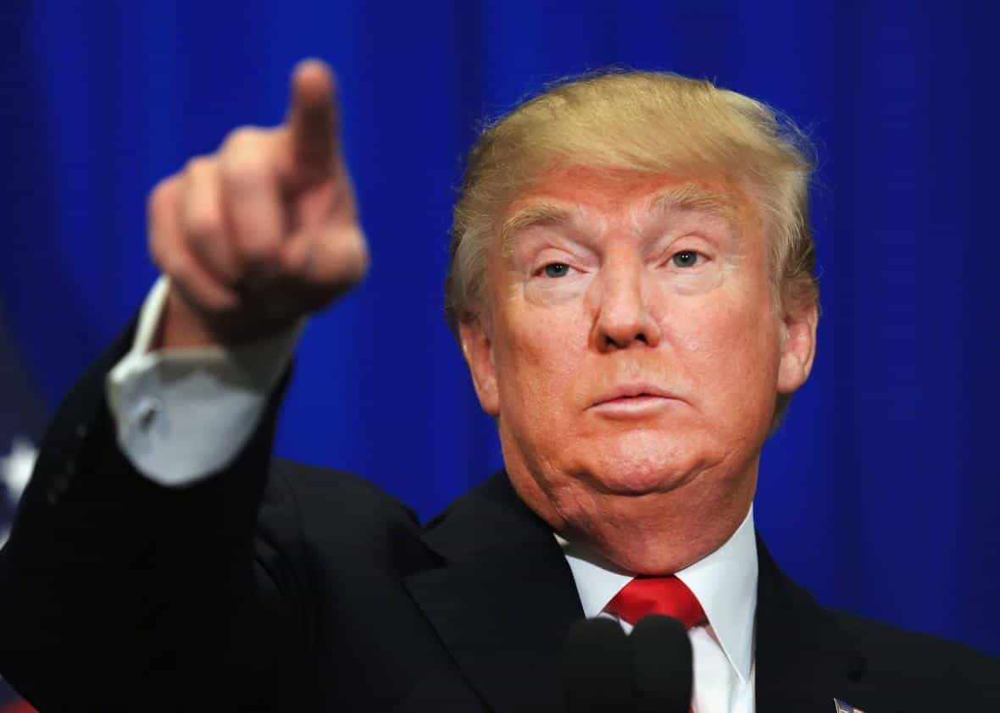
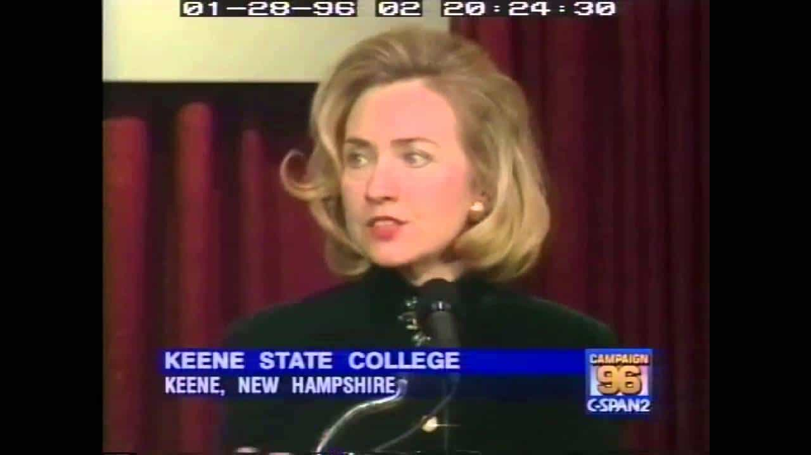
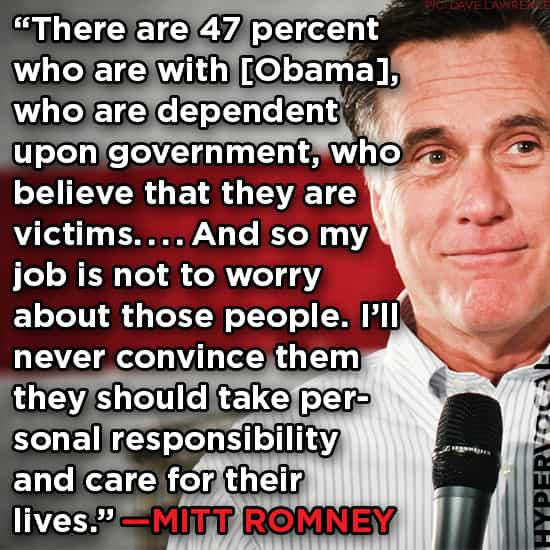

< < < Back
Hillary Clinton Calls At Least 20% Of American Voters “Deplorables” For Supporting Trump – Return Of Kings
After her failed alt-right speech, which ironically saw her “extremist” opponent equal and then surpass her in the polls, Hillary Clinton has resorted to labeling half of all Donald Trump’s supporters as a “basket of deplorables.” These voters are allegedly “racist, sexist, homophobic, xenophobic, [and] Islamaphobic.” Her highly unusual remarks, which buck an unspoken rule that politicians should not directly ridicule broad sections of voters, are being interpreted by many conservative outlets as a sign of serious panic within her campaign.
In recent months, a number of alleged scandals involving Donald Trump have either failed to dent his popularity or have seen that popularity bounce back very quickly. Only a few days ago, CNN, one of the media outlets which has most strongly and consistently predicted a Clinton election victory, acknowledged that Trump was now polling ahead of her nationally.

Hillary Clinton’s two recent anti-rightwing speeches, her attacks on the alt-right and so-called “deplorables,” have come during periods when Trump has seriously threatened to derail her campaign.
Even Time, hardly a repository for balanced political commentary, felt the need to point out that presently 43% of probable American ballot-casters are backing Trump. That equates to over 50 million people who currently will vote for him, which means that over 25 million fall into the “deplorables” category created by Clinton. And remember that this bloc is part of a much more heavily divided field than normal, as high numbers of voters are expected to vote either Libertarian or Green Party.
A very good cross-section of Libertarian voters and many of those not intending to vote at all would also prefer Donald Trump over Hillary Clinton, these groups being largely in agreement with many of Trump’s signature policies, particularly on issues like border control, eschewing overseas nation-building, and tackling the national debt. The dig by Clinton towards Trump and many millions of his supporters is thus a dig at millions of others, too.
What about Hillary’s own history as a “deplorable”?

“Beware of the black youth… I mean super-predators!”
The comments by Clinton about Trump supporters ironically came during a LGBT for Hillary fundraising gala. Like her old rival and later boss Barack Obama, she has a very chequered past of openly opposing gay marriage, the same stance conservatives are currently called bigots for holding.
Hillary’s conversion to supporting gay marriage happened only in March 2013, just after she resigned as Secretary of State and as she could begin to organize her 2016 Presidential campaign behind the scenes. This switch was very, very convenient, as it would enable the former First Lady and New York Senator to widen her appeal, especially given the Clintons’ reputation as relatively rightwing Democrats. The gay marriage backflip doubled-up as the perfect strategy for minimizing the popularity of a more progressive primaries and caucuses opponent like, you guessed it, Bernie Sanders.
A common trope used by gay marriage advocates is to attack non-supporters as being homophobic. Consequently, by these sorts of loose standards, Hillary herself belonged to the ranks of the “deplorables” she is now admonishing until only three and a half years ago. This is hardly the record on which a “champion” for gay rights wants to or should be campaigning.
Then there’s her historical use of extremely charged racial rhetoric. Among other incidents, the “super-predators” language of the 1990s and the various pieces of legislation centered on this concept were respectively popularized (after their initial academic coining) and steadfastly supported by Hillary Clinton. The “super-predators” comments, involving thinly veiled generalizations of African-American youth, have never been renounced by Clinton and were defended by her and her husband during her abortive 2008 Presidential campaign. Yet speech by conservatives falling well short of this is routinely refered to as “racism” today. Once again, Hillary is on this count either still a “deplorable” or at best a recently changed “deplorable.”
Will this be Hillary’s “47% moment”?

During the 2012 Presidential campaign, GOP nominee Mitt Romney was derided in the media for his infamous “47% speech.” More or less rightfully, he admitted to a private group of potential business donors that large groups of voters receiving government financial assistance were and remain wrapped around the little finger of the Democrats. Because the Republicans typically challenge the spiraling rates of government spending, it would indeed be nigh on impossible to sway them to the conservative side of politics.
Unlike Romney, however, Clinton has opted to savage the characters of tens of millions of voters, not merely point out their firm allegiance to her opponent. This could portend very badly for the Democratic nominee both for the upcoming election and into her first term should she win. Clinton is expected to severely clamp down on the alt-right if she succeeds in November and it seems this alt-right has now been enlarged to include half of all Trump supporters, not to mention non-voters or Libertarians with sizeable Trump sympathies.
Irrespective of whether she triumphs, Clinton may have just made more enemies than she and her leftist allies can deal with. Will winning the White House be just the start of her troubles? And then there’s the damage done by the “deplorables” comments to her actual chances of winning. Time will tell, but this might very well be the moment we look back on and say, “This was the day Hillary lost the 2016 Presidential election.”
Read More: Is Hillary Clinton Trying To Sabotage Her Campaign Against Donald Trump?